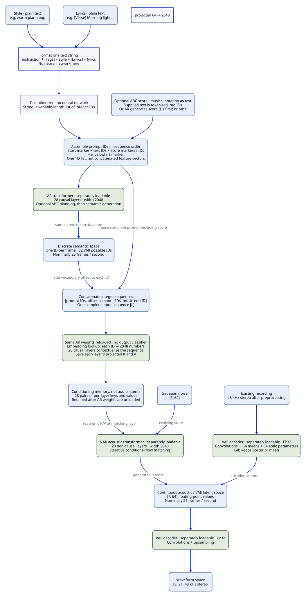
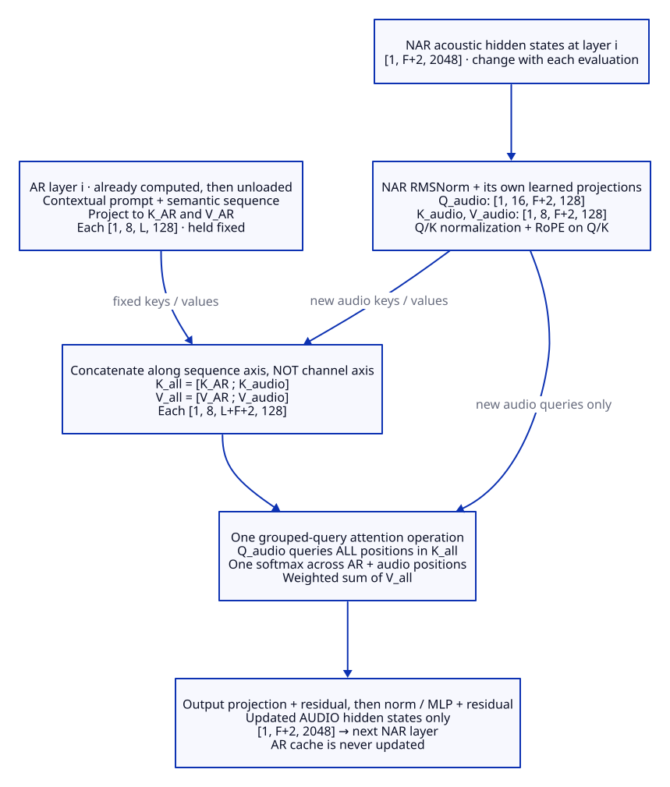
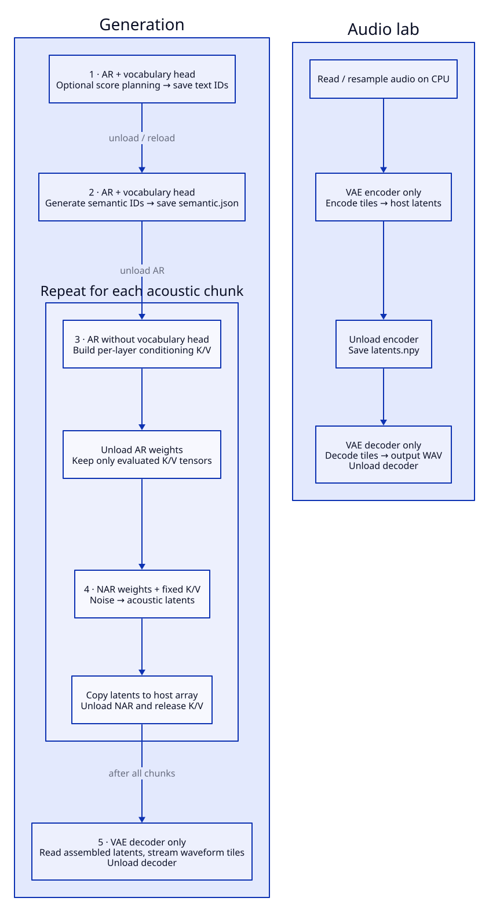
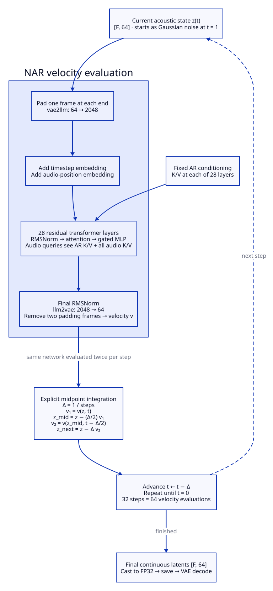
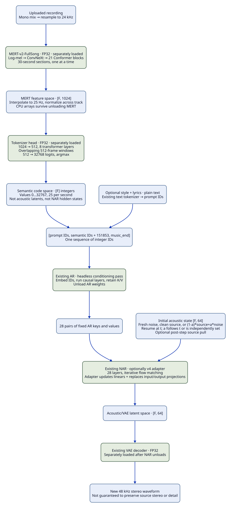

YuE2 MLX / architecture
Four core models, plus audio understanding.
Different spaces. Explicit boundaries.
The VAE audio encoder lands in the continuous acoustic latent space that the acoustic transformer generates. It does not produce semantic tokens, and its output is not already a transformer hidden state.
1. Two paths to the same decoder
Generation: text and an optional ABC score → autoregressive (AR) semantic tokens → AR conditioning cache → non-autoregressive (NAR) acoustic synthesis → VAE latents → waveform.
Audio lab: existing waveform → VAE encoder → VAE latents → VAE decoder. Neither transformer is involved in the current reconstruction experiment.

From your text boxes to the transformer
Style is a plain string, such as warm piano pop. Lyrics are another plain string, including section labels such as [Verse]. The program inserts both into one formatted string. It then tokenizes that string: a tokenizer splits text into vocabulary pieces and returns their integer IDs. This is a text-processing operation, not a transformer, and one token is not necessarily one word.
instruction text
[Tags]
warm piano pop
[Lyrics]
[Verse]
Morning light across the floorABC is also text, but containing symbolic musical notation. A supplied score is tokenized separately and its IDs are appended between score markers. If score planning is enabled without a supplied score, the same AR model first generates those score IDs from the text prompt; they then become part of the completed prompt. If planning is off, the score is empty. These are alternative ways to construct the prompt, not three parallel encoders.
Completed prompt (one list of integer IDs):
[start, ...instruction/style/lyrics IDs,
score_start, ...optional ABC IDs, score_end, music_start]
AR conditioning input for one acoustic chunk (also one list):
[...completed prompt, ...semantic IDs with vocabulary offset, music_end]All these IDs occupy successive sequence positions. They are not vectors joined side-by-side. Inside AR, a learned embedding table looks up a 2,048-number vector for each ID: [L] integers become [L,2048] activations. Causal attention then contextualizes them. A later semantic position can incorporate earlier style, lyrics and score information; there is no single vector designated as the style representation.
What “reloaded without vocabulary head” means
Yes: the complete prompt, the current chunk’s semantic tokens and an end marker are passed together as one sequence to the same AR transformer. This is a new forward pass over known IDs, not another generation loop. The vocabulary head is the final classifier that would turn a hidden vector into scores over 184,704 possible next IDs. We do not need next-token scores here, so we do not load that classifier.
Instead, at each of the 28 AR layers, we save that layer’s keys and values after projection (keys also have normalization and rotary position encoding). These are 28 different pairs, not copies of the final AR output. The AR weights can then be unloaded. The NAR transformer gets this cache, not the original strings, not raw token IDs, and not a single final AR hidden-state array.
Exactly what NAR receives—and what attention does
A NAR velocity call receives (1) a changing acoustic state [F,64], initially Gaussian noise, (2) the current flow time, (3) the fixed 28-layer AR K/V cache and (4) the AR sequence length for positioning. The acoustic state is padded and projected into NAR’s 2,048-wide hidden representation; time and audio-position embeddings are added.

L is the AR input length; F+2 includes two acoustic padding frames. Open full-size SVG · D2 sourceThink of a query as what an audio position is looking for, a key as what a memory position can be matched against, and a value as the information retrieved from it. These are learned vectors, not labels with fixed human-readable meanings. At NAR layer i, audio produces new Q/K/V using NAR’s own weights. Its K/V are joined with cached AR K/V from layer i, along the position axis. Audio queries then read both kinds of memory.
So the representations are deliberately different: integer text/semantic IDs → AR hidden vectors → layer-specific K/V memory on one side; continuous 64-channel acoustic vectors → NAR hidden vectors on the other. They meet only after projection into compatible attention-head dimensions. Compatible dimensions do not make the original tokens, K/V tensors and VAE latents interchangeable.
2. What is in each “space”?
Here, F is the number of audio frames, S the number of waveform samples, and L the conditioning-token count. Shapes omit the batch dimension unless shown.
| Representation | Shape / meaning | Boundary |
|---|---|---|
| Text / ABC IDs | Integer sequence; ABC is symbolic musical notation, tokenized as text. | Tokenizer → AR embedding. Planning can be generated, supplied, or skipped. |
| Semantic audio tokens | [F] integers in 0…32,767; nominally 25/s. Offset by 151,853 when embedded in the AR vocabulary. | AR samples these discrete IDs. They are not 64-dimensional VAE vectors. |
| Transformer hidden states | [tokens, 2048] or padded [F+2, 2048]; contextual internal activations. | AR and NAR have separate learned weights. Equal hidden widths do not make their states interchangeable. |
| AR conditioning K/V | 28 key/value pairs. Each tensor: [1, 8, L, 128]. | A layer-specific attention interface from AR to NAR; not an audio encoding or one pooled text vector. |
| Continuous acoustic / VAE latents | [F, 64] floating-point vectors; nominally 25/s. Saved as FP32 latents.npy. | Encoder output or NAR output → decoder input. NAR projects 64 → 2048 internally and 2048 → 64 back out. |
| Waveform | [S, 2], 48,000 stereo samples/s. | Encoder input / decoder output. Nominal compression stride 1,920 samples; exact output length follows convolution geometry. |
The VAE’s apparent 128-versus-64 mismatch
The encoder’s final convolution emits 128 channels: 64 posterior means and 64 scale parameters. The lab keeps only the mean, giving a deterministic [F,64] representation. The lower-level encoder also supports posterior sampling, but the lab does not use it. The decoder consumes 64 channels.
Both VAE halves use FP32 convolutions, residual units and SnakeBeta activations. Six downsampling strides—2, 2, 4, 4, 5, 6—multiply to 1,920; the decoder reverses the resolution changes. Encoding and decoding use receptive-field halos around tiles and crop their edges, rather than processing unrelated audio segments.
3. Weight residency is a separate boundary
The port splits the checkpoint into ar, nar, encoder and decoder. The pipeline allows one weight stage at a time. Data can outlive a stage without keeping that model loaded.

For each acoustic chunk, AR reads the prompt plus that chunk’s semantic IDs and an end marker. Its evaluated K/V cache survives the unload. NAR uses that cache throughout synthesis; afterward both NAR weights and K/V are released. The completed latents accumulate in a CPU/NumPy array before decoding.
The current 8-bit checkpoint quantizes selected transformer linear weights, not every tensor. Transformer computation otherwise uses BF16; embeddings and some projections remain BF16. VAE weights and computation remain FP32. Each VAE half occupies roughly 0.25 GiB of weight storage.
Acoustic chunk length is bounded by floor((24576 − prefix_tokens − 3) / 2): semantic context and acoustic frame positions both consume context capacity. Attention query chunking limits temporary allocation while preserving the full visible key set; it is not a sliding attention window.
4. The “diffusion” part is a flow-matching solver
The NAR network predicts a velocity in continuous acoustic space. Generation starts at Gaussian noise at time 1, then integrates toward time 0. The code uses an explicit midpoint ODE solver—not token sampling and not a sequence of waveform denoising filters.

At each velocity evaluation, the model pads a latent frame at either end, projects from 64 to 2,048 channels, and adds timestep and sinusoidal audio-position embeddings. Each layer uses 16 query heads and 8 key/value heads of width 128, RoPE, RMSNorm and a gated SiLU MLP with intermediate width 6,144.
Audio queries attend non-causally to both the fixed AR keys/values and all current acoustic keys/values, concatenated within the attention operation. This is not a separate conventional cross-attention module. The final projection produces 64-channel velocity and removes the padding frames.
Δ = 1 / steps
v₁ = velocity(z, t, fixed_cache)
z_mid = z − (Δ / 2) × v₁
v₂ = velocity(z_mid, t − Δ / 2, fixed_cache)
z = z − Δ × v₂
t = t − ΔDefault 32 steps means 64 full NAR velocity evaluations. Frames are processed jointly, which is what “non-autoregressive” means here; it does not mean synthesis takes only one forward pass. The implementation passes time through a clamped logit/sigmoid interface and the checkpoint’s timestep shift (1.0).
AR sampling is different: it generates one discrete token at a time with a causal K/V cache, vocabulary masks, repetition penalty and top-k/top-p sampling. Classifier-free guidance in this port applies to AR semantic logits using positive/negative prompt caches, not to the NAR flow loop.
5. What these boundaries let you experiment with
| Experiment | Available route | Important limitation |
|---|---|---|
| Audio reconstruction / possible cleanup | Encoder → posterior mean → decoder. Already implemented in the lab. | Not trained denoising. The bottleneck can preserve noise or remove wanted detail. |
| Edit or interpolate acoustic latents | Encode, modify latents.npy, decode. The decoder can run alone. | Technically accessible, but arbitrary changes can leave the learned distribution. No guaranteed “instrument” axis. |
| Melody → another arrangement / sound | Supply a symbolic ABC score and change style conditioning, then generate. | This is conditional regeneration, not faithful audio-to-audio timbre transfer. An input recording is not automatically transcribed by this pipeline. |
| Noise / partial-flow editing of existing audio | Flow lab: encode audio, mix with noise or use directly, then integrate from a chosen time to zero with text-only AR conditioning. Optional anchored mode applies a soft post-step pull toward (1−t) × source + t × the fixed initial noise, using blend 1−exp(−strength × step duration). | Implemented as an experiment, not validated restoration. Straight-line noise mixing is an assumption; direct mode deliberately mismatches state and time. No source semantic tokens or ODE inversion. Strong source anchoring preserves defects too; it does not force the endpoint to the original. |
| Bandwidth restoration / upsampling | Resampling and VAE reconstruction already produce 48 kHz output. | A higher sample rate does not recover missing high frequencies. Reliable restoration needs a suitable objective or trained conditioning. |
Real-audio semantic path (added September 15)
Semantic lab uses a separate MERT encoder and token-prediction transformer to obtain semantic IDs from a recording. These replace AR-generated semantic IDs, but still pass through the existing AR conditioning forward pass before NAR can use them. MERT features are never inserted directly into the AR cache.

MERT and the token head use FP32 arithmetic and unload before acoustic synthesis. The optional v4 NAR adapter runs alongside the existing quantized linears and replaces the 64↔2048 input/output projections. This tab supports fresh noise, partial noise + resume, direct refinement and anchored source guidance, plus either frozen-reference placement. Initial noise amount can follow the start time or be set independently. Each acoustic chunk builds its own reference cache using that chunk’s semantic conditioning. MERT sees mono; NAR creates stereo anew. README documents chunking, precision differences and limitations.
Frozen reference audio memory (added September 14)
Flow lab can optionally encode a second recording and prefill NAR once to capture its per-layer K/V. Reference prefill sees AR prompt memory and its own acoustic frames, never the target. It uses the target's starting time: an unchanged reference encoding in direct mode, or a single noise-mixed encoding in the other modes. These K/V remain frozen; no reference velocity is integrated and no reference prefill is repeated during the solve.
Placement selects full-sequence rotary positions and attention order: [AR, reference, target] for prefix, or [AR, target, reference] for acoustic placement. Each acoustic block keeps its own local sinusoidal positions and two boundary frames. This is acoustic-derived memory in both cases—not semantic-token extraction. Strength adds log(strength) to reference attention logits; zero bypasses the reference and its position shifts entirely. Reference noise uses a separate deterministic seed, so enabling it does not change the target's initial noise.
This works with all three flow modes and independent L/R (matching the reference's channels). There is no artificial reference duration cap; combined prompt, target, and reference must fit the model context and available memory. Fixed-time memory and these layouts are untrained extensions; the model may transfer notes, rhythm, or artifacts rather than recording quality.
6. Follow the implementation
This guide describes the code and converted checkpoint present on September 13, 2026, with reference-memory additions on September 14 and semantic-token extraction on September 15, rather than a proposed architecture. All documentation links are local; the upstream reference directory is not needed to view it.
- pipeline.py: stage lifetime, planning, semantic generation, acoustic chunking, lab round trip.
- model.py: AR.condition, NAR.velocity, NAR.solve and transformer layers.
- vae.py: posterior mean, convolution geometry, exact-halo tiling.
- protocol.py and sampling.py: prompts, vocabulary boundaries, token sampling.
- weights.py: checkpoint split, precision, quantization and release.
- VALIDATION.md: parity tests and measured memory/performance; third-party attribution.
Rebuild the diagrams
The SVGs are stored alongside their editable D2 sources and work offline. From the repository root, with D2 installed:
d2 --layout dagre --pad 24 context/architecture.d2 context/architecture.svg
d2 --layout dagre --pad 24 context/residency.d2 context/residency.svg
d2 --layout dagre --pad 24 context/attention.d2 context/attention.svg
d2 --layout dagre --pad 24 context/flow.d2 context/flow.svg
d2 --layout dagre --pad 24 context/realaudio.d2 context/realaudio.svg